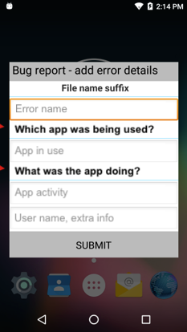

概述
Bug Report Manager (BugReportMgr) 为报告与 Zebra 移动数据终端上的感知问题相关联的时间、日期、用户输入和相关技术数据提供了一个框架，它以标准 Android Bug 报告机制为基础。Bug 报告可通过 Intent 以编程方式触发，或在没有启用设备上的“开发人员选项”的情况下使用“关机”菜单上的按钮手动触发。Bug 报告文件可存储在设备闪存（固定或可拆卸）中，数量仅受到可用内存的限制。除了本地存储之外，报告还可以发送到指定的电子邮件地址和/或上传到 Zebra 云。
主要功能
- 将 Bug 报告处理设置为默认 (Android) 或自定义 (Zebra)
- 呈现设备用户调查问卷以收集其他信息
- 在可用闪存中存储无限数量的 Bug 报告文件
- 捕获音频并附加到 Bug 报告
- 通过 Intent 触发“无提示”Bug 报告
- 在设备上启用/禁用：
- 从关机菜单中生成 Bug 报告
- 获取 Bug 报告的屏幕截图
- 通过 Intent 触发 Bug 报告
- 在闪存中存储报告
- 将报告发送到指定的电子邮件地址
- 上传报告到 Zebra 云
关于 Bug 报告
主要特性
- Bug 报告存储在名为
bugreport-YYYY-MM-DD-HH-MM-SS.zip的文件中。 - 如果用户通过 FileNameTextBox 参数输入“Error name”，该文本将按照
bugreport-YYYY-MM-DD-HH-MM-SS-Error_name.zip的方式附加在报告名称后。 - 在 FileNameTextBox 参数中输入的文本将成为包含 Bug 报告中的用户输入数据的文件的名称。
- Bug 报告还包括标准 Android Bug 报告 (.txt) 和屏幕截图 (.png) 文件。
- Bug 报告可使用广播消息在没有提示（无用户对话框）的情况下触发：
com.symbol.mxmf.intent.START_FOR_BUG_REPORT。 - 在启用了 USB 部署的设备上，可以从“设置”面板中以无提示的方式触发 Bug 报告（无用户对话框）。
 Zebra Bug 报告（称为“浏览器崩溃”）将用户生成的输入文件添加 到 Android .txt 和 .png Bug 报告文件。
Zebra Bug 报告（称为“浏览器崩溃”）将用户生成的输入文件添加 到 Android .txt 和 .png Bug 报告文件。
关于用户对话框
用户对话框是 Bug Report Manager 的增值功能之一，它可以从正在使用已证明有 Bug 的设备的人员那里收集信息，这通常会提供有关 Bug 根本原因的宝贵见解。这种“调查问卷”在生成 Bug 报告时出现，应设计为从设备用户那里收集有关可能引发或导致报告故障的活动的信息。用户输入的数据存储 bugreport.zip 中的单独文本文件中。对话框的构造是渐增的；可添加任意数量的用户输入字段（文本框）和字段标签，直到询问了所有需要的问题，并且满足了所有数据收集需求。
 设备用户的用户对话框或“调查问卷”的示例。
注意：为确保正确操作，每个新的对话框必须以“ClearDialog”操作开始，以“LayoutEnd”操作结束。
FileNameTextBox
FileNameTextBox 可提供用户提供所报告 Bug 的“错误名称”。此可选功能可帮助管理员标识和整理 Bug 报告，从而能够处理大量文件。在此字段中输入的文本将被附加到 Bug 报告的文件名后（在日期和时间之后），并且成为报告 zip 文件中用来存储用户输入数据的文件的名称。在此字段中输入空格将被转换为下划线字符；其他非文本字符都将被删除。如果被用户留空，，则会出现“no_user_entry”。
 用户对话框示例显示了文本框、标签和有用的“提示”文本。
用户对话框示例显示了文本框、标签和有用的“提示”文本。
标签
标签是一个静态文本字段，用于询问问题或提供在它下面的空白文本框中输入信息的说明。例如，文本字段上方的标签在用于捕获导致崩溃的活动时，可能询问“就在出现错误之前，您正在做什么？”可以为对话框添加任意数量的标签。
文本框
文本框是一个空白字段，用户可在其中输入某个问题的答案或问题的说明。文本框允许管理员包括“提示”文本，帮助引导用户进行所需的输入（例如，“正在使用哪个应用程序？”）。提示文本会填充另外的空白文本字段（如上所示），在用户开始键入时消失。
注意：在生成的 Bug 报告中，提示文本变为用户在该字段中输入的数据的标签，因此一定要仔细考虑提示文本。例如，“您的姓名”这样的提示自然对用户很有帮助，而“报告 Bug 的人”对于读取报告的人员而言可能更好，这对于用户同样也非常有帮助。
注意：为确保正确操作，每个新的对话框必须以“ClearDialog”操作开始，以“LayoutEnd”操作结束。
Bug 报告处理
这是设备上 Zebra Bug 报告的启用/关闭开关。当启用（选项 2）时，使用 Zebra Bug 报告功能来生成、存储和传输 Bug 报告，并且需要时可在报告中补充设备用户提供的信息。当此参数被禁用（选项1）时，设备将使用 Android Bug 报告功能。
参数名称：BugReportProfile
| 选项 | 名称 | 说明 | 需要 |
|---|---|---|---|
| 0 | none | 此值（或 XML 中缺少此参数）导致不会更改 Bug Report Manager 设置；任何以前选择的设置都将保留。 |
MX：6.3+ Android API：23+ |
| 1 | old | 设置设备使用 Android Bug 报告功能。 |
MX：6.3+ Android API：23+ |
| 2 | new | 设置设备使用 Zebra Bug Report Manager 来报告和处理 Bug。 |
MX：6.3+ Android API：23+ |
Bug 报告按钮显示/隐藏
控制标记有“获取 Bug 报告”的按钮是否显示在 Android 的“关机”菜单中，它会在长按设备上的电源键后显示。使用此功能生成的 Bug 报告将根据“Bug 报告配置文件”参数中指定的处理首选项进行存储和/或发送。注意：还可以从“设置”面板中打开和关闭、静默执行（无用户对话框）“获取 Bug 报告”功能。
大多数关机菜单功能都通过 Power Key Manager 控制。
参数名称：EnableBRInPwrMenu
| 选项 | 名称 | 说明 | 需要 |
|---|---|---|---|
| 0 | none | 此值（或 XML 中缺少此参数）导致不会更改 Bug Report Manager 设置；任何以前选择的设置都将保留。 |
MX：6.3+ Android API：23+ |
| 1 | 是 | 在“关机”菜单上显示“获取 Bug 报告”按钮。 |
MX：6.3+ Android API：23+ |
| 2 | 否 | 在关机菜单中隐藏“获取 Bug 报告”按钮。 |
MX：6.3+ Android API：23+ |
存储启用/禁用
用于指定是否在设备的闪存中存储 Bug 报告。如果已启用，Bug 报告将存储在 BugReportFilePath 参数指定的位置。警告：如果将此参数设置为 False，Bug 报告将不存储在任何用户可访问的设备区域。
在以下条件下显示：BugReportProfile 参数设置为“New”
参数名称：StorageEnable
| 选项 | 名称 | 说明 | 需要 |
|---|---|---|---|
| 0 | none | 此值（或 XML 中缺少此参数）导致不会更改 Bug Report Manager 设置；任何以前选择的设置都将保留。 |
MX：6.3+ Android API：23+ |
| 1 | 否 | 阻止将 Bug 报告存储在设备上。 |
MX：6.3+ Android API：23+ |
| 2 | 是 | 允许将 Bug 报告存储在设备上。 |
MX：6.3+ Android API：23+ |
存储路径
用于指定在使用 StorageEnable 参数启用了设备存储时 Bug 报告的存储路径。支持固定和可移动存储，但指定的路径在执行 Bug Report Manager 时必须有效。如果未指定路径，Bug 报告存储在 /storage/sdcard0/BugReports/ 中，这是所有 Zebra 设备上的有效路径。
参数值输入规则：
- 至少 1 个字符的字符串，其中包含有效的存储路径
在以下条件下显示：StorageEnable 参数设置为“True”
参数名称：BugReportFilePath
需要：
- MX：6.3+
- Android API：23+
电子邮件启用/禁用
控制是否要通过电子邮件发送 Bug 报告。如果已启用，Bug 报告将使用以下相关参数中指定的电子邮件发件人帐户和收件人地址发送。
参数名称：EmailEnable
| 选项 | 名称 | 说明 | 需要 |
|---|---|---|---|
| 0 | none | 此值（或 XML 中缺少此参数）导致不会更改 Bug Report Manager 设置；任何以前选择的设置都将保留。 |
MX：6.3+ Android API：23+ |
| 1 | 否 | 阻止 Bug Report Manager 通过电子邮件发送 Bug 报告。 |
MX：6.3+ Android API：23+ |
| 2 | 是 | 设置 Bug Report Manager 通过电子邮件发送 Bug 报告。 |
MX：6.3+ Android API：23+ |
发件人电子邮件地址
用于指定用来发送 Bug 报告的电子邮件地址。必须是与 EmailSendersPassword 参数中指定的密码对应的地址。这通常是一个专为发送这些报告创建的通用帐户，以简化大规模部署、管理和维护任务。
参数值输入规则：
- 包含发件人电子邮件地址的字符串
在以下条件下显示：EmailEnable 参数设置为“True”
参数名称：EmailSendersID
需要：
- MX：6.3+
- Android API：23+
发件人的电子邮件密码
用于指定用来发送 Bug 报告的电子邮件帐户的密码。必须是与 EmailSendersID 参数中指定的地址对应的密码。
参数值输入规则：
- 至少 1 个字符的字符串，其中包含电子邮件发件人的密码
在以下条件下显示：EmailEnable 参数设置为“True”
参数名称：EmailSendersPassword
需要：
- MX：6.3+
- Android API：23+
发件人的电子邮件服务器
用于指定在 EmailSendersID 参数中指定的发件人帐户的电子邮件服务器。
参数值输入规则：
- 包含电子邮件发件人帐户的主机名的字符串
在以下条件下显示：EmailEnable 参数设置为“True”
参数名称：EmailSMTPHost
需要：
- MX：6.3+
- Android API：23+
服务器的 SMTP 端口
用于指定在 EmailSendersID 参数中指定的发件人电子邮件服务器的 SMTP 端口。
参数值输入规则：
- 包含发件人电子邮件服务器所使用端口的字符串
在以下条件下显示：EmailEnable 参数设置为“True”
参数名称：EmailSMTPPort
需要：
- MX：6.3+
- Android API：23+
收件人电子邮件
用于指定 Bug 报告目标收件人的电子邮件地址。
参数值输入规则：
- 包含有效电子邮件地址字符串
在以下条件下显示：EmailEnable 参数设置为“True”
参数名称：EmailSendTo
需要：
- MX：6.3+
- Android API：23+
Intent 启用/禁用
控制是否可通过 Intent 触发 Bug 报告。默认情况下已启用。
参数名称：EnableIntent
| 选项 | 名称 | 说明 | 需要 |
|---|---|---|---|
| 0 | none | 此值（或 XML 中缺少此参数）导致不会更改 Bug Report Manager 设置；任何以前选择的设置都将保留。 |
MX：7.0+ Android API：24+ |
| 1 | 是 | 允许通过 Intent 触发 Bug 报告。 |
MX：7.0+ Android API：24+ |
| 2 | 否 | 阻止 Intent 触发 Bug 报告。 |
MX：7.0+ Android API：24+ |
屏幕截图启用/禁用
控制是否获取屏幕截图并且与 Bug 报告一起保存。默认情况下已启用。
参数名称：EnableScreenshot
| 选项 | 名称 | 说明 | 需要 |
|---|---|---|---|
| 0 | none | 此值（或 XML 中缺少此参数）导致不会更改 Bug Report Manager 设置；任何以前选择的设置都将保留。 |
MX：7.0+ Android API：24+ |
| 1 | 是 | 允许获取屏幕截图并与每个 Bug 报告一起保存。 |
MX：7.0+ Android API：24+ |
| 2 | 否 | 阻止获取 Bug 报告的屏幕截图。 |
MX：7.0+ Android API：24+ |
云存储启用/禁用
控制是否将 Bug 报告上传到 Zebra 云。当启用该功能时，数据暂时存储在设备上的专用区域，直到传输到 Zebra 云完成。进行传输前数据从不提供给用户或第三方应用程序。在 Zebra 设备上通过 Elemez B2M 客户端提供云传输。
参数名称：CloudEnable
| 选项 | 名称 | 说明 | 需要 |
|---|---|---|---|
| 0 | none | 此值（或 XML 中缺少此参数）导致不会更改 Bug Report Manager 设置；任何以前选择的设置都将保留。 |
MX：6.3+ Android API：23+ |
| 1 | 否 | 阻止将 Bug 报告上传到 Zebra 云。 |
MX：6.3+ Android API：23+ |
| 2 | 是 | 导致 Bug 报告被上传到 Zebra 云。 |
MX：6.3+ Android API：23+ |
对话框操作
用于选择要在用户对话框中显示的字段类型，以及在生成 Bug 报告时向用户显示的“调查问卷”。此类对话框可用于收集有关可能引发或导致所报告故障的用户活动的信息。对话框的构造是渐增的；可添加任意数量的用户输入字段（文本框）和字段标签，直到询问了所有需要的问题，并且满足了所有数据收集需求。有关在设备上使用和显示这些字段的方式的更多信息，请参阅概述部分（参见上文）。
注意：为确保正确操作，每个新的对话框必须以“ClearDialog”操作开始，以“LayoutEnd”操作结束。
参数名称：DialogAction
| 选项 | 名称 | 说明 | 需要 |
|---|---|---|---|
| 0 | none | 此值（或 XML 中缺少此参数）导致不会更改设备上的 Bug Report Manager 设置；任何以前选择的设置都将保留。 |
MX：6.3+ Android API：23+ |
| 1 | ClearDialog | 表示开始一个新的对话框布局。 |
MX：6.3+ Android API：23+ |
| 2 | AddErrorNameTextBox | 添加一个用于提供 Bug 名称的文本框，该 Bug 名称将附加到 Bug 报告的文件名后，成为报告中包含用户输入数据的文件的名称。 |
MX：6.3+ Android API：23+ |
| 3 | AddLabel | 可选的静态文本字段，用于询问问题或提供在文本框中输入数据的说明。 |
MX：6.3+ Android API：23+ |
| 4 | AddTextBox | 添加一个空白文本框，用户可在其中输入有关所报告 Bug 的信息。 |
MX：6.3+ Android API：23+ |
| 6 | AddVoiceRecordButton | 显示一个用于激活语音捕获功能的按钮，用于创建 Bug 报告随附的消息。 |
MX：6.3+ Android API：23+ |
| 7 | LayoutEnd | 表示一个对话框布局的结束。 |
MX：6.3+ Android API：23+ |
错误名称
允许用户为所报告的 Bug 提供一个名称。在此处输入的文本将被附加到 Bug 报告的文件名后（在日期和时间之后），并且成为报告 zip 文件中用来包含用户输入数据的文件的名称。在此字段中输入空格将被转换为下划线字符；其他非文本字符都将被删除。如果被用户留空，，则会出现“no_user_entry”。
参数值输入规则：
- 至少包含 1 个字符的字符串，为问题提供一个名称
在以下条件下显示：DialogAction 参数设置为“AddErrorNameTextBox (2)”
参数名称：FileNameTextBox
需要：
- MX：6.3+
- Android API：23+
文本字段标签
用于提供一个或多个静态文本字段，以询问设备用户问题，或描述要在空白字段中输入的信息。例如，文本字段上方的标签在用于捕获导致崩溃的活动时，可能询问“简要描述就在出现错误之前，您正在做什么。”
参数值输入规则：
- 至少包含 1 个字符的字符串，为问题提供一个标签
在以下条件下显示：DialogAction 参数设置为“AddLabel (3)”
参数名称：标签
需要：
- MX：6.3+
- Android API：23+
文本框
用于添加一个或多个空白文本字段，获取描述所报告问题的用户输入。文本框允许管理员包括“提示”文本，帮助引导用户进行所需的输入（例如，“正在使用的应用程序”）。提示文本会填充另外的空白文本字段，在用户开始键入时消失。在生成的 Bug 报告中，提示文本变为用户在该字段中输入的数据的标签。
参数值输入规则：
- 至少包含 1 个字符的字符串，其中包含所报告问题的描述
在以下条件下显示：DialogAction 参数设置为“True”
参数名称：AddTextBox
需要：
- MX：6.3+
- Android API：23+
设置对话框超时
控制用于收集用户生成的 Bug 报告信息的对话框将在 60 秒（默认值）不活动或使用 DialogTimeout 参数指定的自定义间隔后自动消失。对话框因为用户不活动而消失后，将生成一个在文件名后附加了“no_user_entry”的 Bug 报告；当时在文本框中收集的任何数据将被保留。
参数名称：SetDialogTimeout
| 选项 | 名称 | 说明 | 需要 |
|---|---|---|---|
| 0 | none | 此值（或 XML 中缺少此参数）导致不会更改 Bug Report Manager 设置；任何以前选择的设置都将保留。 |
MX：6.3+ Android API：23+ |
| 1 | 是 | 允许将对话框超时设置为自定义值。 |
MX：6.3+ Android API：23+ |
对话框超时
用于指定用户对话框超时间隔（毫秒），在此间隔后对话框自动消失并且发送 Bug 报告，就如同用户按下“提交”按钮一样；当时在文本框中收集的所有数据将被保留。默认超时为 60 秒（60000 毫秒），每当用户与对话框交互时都会重置。
参数值输入规则：
- 至少 1 个字符的字符串，其中包含超时间隔（毫秒）
在以下条件下显示：SetDialogTimeout 参数设置为“True”
参数名称：DialogTimeout
需要：
- MX：6.3+
- Android API：23+
示例
启用 Zebra Bug 报告、显示 Bug 报告按钮、在闪存中存储报告
<wap-provisioningdoc><characteristic type="BugReportMgr" version="6.3" ><parm name="BugReportProfile" value="new"/><parm name="EnableBRInPwrMenu" value="True"/><characteristic type="DialogDetails"><parm name="DialogAction" value="none"/></characteristic><characteristic type="StorageDetails"><parm name="StorageEnable" value="True"/><parm name="BugReportFilePath" value="/storage/sdcard0/BugReports/"/></characteristic><characteristic type="EmailDetails"><parm name="EmailEnable" value="none"/></characteristic><characteristic type="CloudDetails"><parm name="CloudEnable" value="none"/></characteristic><parm name="SetDialogTimeout" value="none"/></characteristic></wap-provisioningdoc>启用 Zebra Bug 报告、显示 Bug 报告按钮、通过电子邮件发送报告
<wap-provisioningdoc><characteristic type="BugReportMgr" version="6.3" ><parm name="BugReportProfile" value="new"/><parm name="EnableBRInPwrMenu" value="True"/><characteristic type="DialogDetails"><parm name="DialogAction" value="none"/></characteristic><characteristic type="StorageDetails"><parm name="StorageEnable" value="none"/></characteristic><characteristic type="EmailDetails"><parm name="EmailEnable" value="True"/><parm name="EmailSendTo" value="BugReportRecipient@domain.com"/><parm name="EmailSendersID" value="BugReportSenderAccount@domain.com"/><parm name="EmailSendersPassword" value="Bug_report_acct_password"/><parm name="EmailSMTPHost" value="smtp.domain.com"/><parm name="EmailSMTPPort" value="25"/></characteristic><characteristic type="CloudDetails"><parm name="CloudEnable" value="none"/></characteristic><parm name="SetDialogTimeout" value="none"/></characteristic></wap-provisioningdoc>启用 Zebra Bug 报告、显示 Bug 报告按钮、上传报告到 Zebra 云
<wap-provisioningdoc><characteristic type="BugReportMgr" version="6.3" ><parm name="BugReportProfile" value="new"/><parm name="EnableBRInPwrMenu" value="True"/><characteristic type="DialogDetails"><parm name="DialogAction" value="none"/></characteristic><characteristic type="StorageDetails"><parm name="StorageEnable" value="none"/></characteristic><characteristic type="EmailDetails"><parm name="EmailEnable" value="none"/></characteristic><characteristic type="CloudDetails"><parm name="CloudEnable" value="True"/></characteristic><parm name="SetDialogTimeout" value="none"/></characteristic></wap-provisioningdoc>使用文件名、标签和错误描述文本框和音频录制按钮构建对话框
<wap-provisioningdoc><characteristic type="BugReportMgr" version="6.3" ><parm name="BugReportProfile" value="none"/><parm name="EnableBRInPwrMenu" value="none"/><characteristic type="DialogDetails"><parm name="DialogAction" value="ClearDialog"/></characteristic></characteristic><characteristic type="BugReportMgr" version="6.3" ><parm name="BugReportProfile" value="none"/><parm name="EnableBRInPwrMenu" value="none"/><characteristic type="DialogDetails"><parm name="DialogAction" value="AddErrorNameTextBox"/><parm name="FileNameTextBox" value="Name for this error"/></characteristic></characteristic><characteristic type="BugReportMgr" version="6.3" ><parm name="BugReportProfile" value="none"/><parm name="EnableBRInPwrMenu" value="none"/><characteristic type="DialogDetails"><parm name="DialogAction" value="AddLabel"/><parm name="Label" value="Activity just before the error:"/></characteristic></characteristic><characteristic type="BugReportMgr" version="6.3" ><parm name="BugReportProfile" value="none"/><parm name="EnableBRInPwrMenu" value="none"/><characteristic type="DialogDetails"><parm name="DialogAction" value="AddTextBox"/><parm name="TextBox" value="Description of the error"/></characteristic></characteristic><characteristic type="BugReportMgr" version="6.3" ><parm name="BugReportProfile" value="none"/><parm name="EnableBRInPwrMenu" value="none"/><characteristic type="DialogDetails"><parm name="DialogAction" value="AddVoiceRecordButton"/></characteristic></characteristic><characteristic type="BugReportMgr" version="6.3" ><parm name="BugReportProfile" value="none"/><parm name="EnableBRInPwrMenu" value="none"/><characteristic type="DialogDetails"><parm name="DialogAction" value="LayoutEnd"/></characteristic></characteristic></wap-provisioningdoc>启用 Zebra Bug 报告、显示 Bug 报告按钮、在闪存中存储、通过电子邮件发送、使用文本名和错误描述文本框构建对话框
<wap-provisioningdoc><characteristic type="BugReportMgr" version="6.3" ><parm name="BugReportProfile" value="new"/><parm name="EnableBRInPwrMenu" value="True"/><characteristic type="DialogDetails"><parm name="DialogAction" value="none"/></characteristic><characteristic type="StorageDetails"><parm name="StorageEnable" value="True"/><parm name="BugReportFilePath" value="/storage/sdcard0/BugReports/"/></characteristic><characteristic type="EmailDetails"><parm name="EmailEnable" value="True"/><parm name="EmailSendTo" value="BugReportRecipient@domain.com"/><parm name="EmailSendersID" value="BugReportSenderAccount@domain.com"/><parm name="EmailSendersPassword" value="Bug_report_acct_passw0rd"/><parm name="EmailSMTPHost" value="smtp.domain.com"/><parm name="EmailSMTPPort" value="25"/></characteristic><characteristic type="CloudDetails"><parm name="CloudEnable" value="none"/></characteristic><parm name="SetDialogTimeout" value="none"/></characteristic><characteristic type="BugReportMgr" version="6.3" ><parm name="BugReportProfile" value="none"/><parm name="EnableBRInPwrMenu" value="none"/><characteristic type="DialogDetails"><parm name="DialogAction" value="ClearDialog"/></characteristic></characteristic><characteristic type="BugReportMgr" version="6.3" ><parm name="BugReportProfile" value="none"/><parm name="EnableBRInPwrMenu" value="none"/><characteristic type="DialogDetails"><parm name="DialogAction" value="AddErrorNameTextBox"/><parm name="FileNameTextBox" value="Name for this error"/></characteristic></characteristic><characteristic type="BugReportMgr" version="6.3" ><parm name="BugReportProfile" value="none"/><parm name="EnableBRInPwrMenu" value="none"/><characteristic type="DialogDetails"><parm name="DialogAction" value="AddTextBox"/><parm name="TextBox" value="Description of the error"/></characteristic></characteristic><characteristic type="BugReportMgr" version="6.3" ><parm name="BugReportProfile" value="none"/><parm name="EnableBRInPwrMenu" value="none"/><characteristic type="DialogDetails"><parm name="DialogAction" value="LayoutEnd"/></characteristic></characteristic></wap-provisioningdoc>